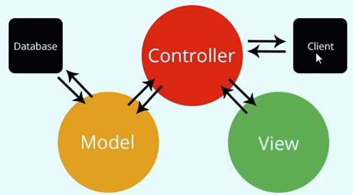
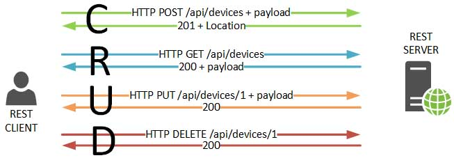
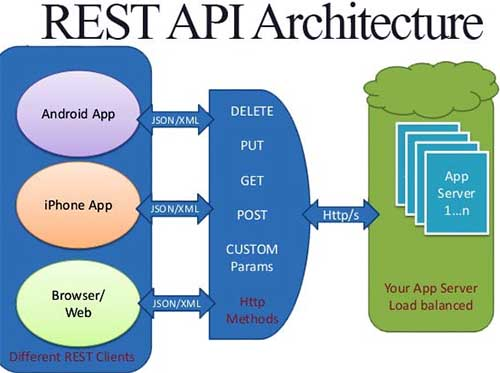

API (Application Programming Interface), o Interfaz de
Programación de Aplicaciones, conjunto de rutinas que provee
acceso a funciones desde un determinado software, ej. acceso a
las funciones de nuestros sitios y aplicaciones web.
En navegadores web se tienen 2 tipos de APIs:
APIs nativas.- DOM es la API que permite acceder al código HTML
de documentos a través de JS o la Geolocalización que permite
acceder a coordendas terrestres de ubicación actual;
APIs externas.- Provistas como Twitter (obtiene tweets de un
usuario), GitHub (obtener información de repositorios de una
cuenta) o WordPress (acceder a información de páginas y entradas
de un sito). La mayoría de las actuales funcionan con
Arquitectura REST
REST (Representational State Transfer) Transferencia de
Estado Representacional
Un servicio REST es un conjunto de restricciones con las que se
pueden crear estilos de arquitectura de software, el cual se
puede usar para crear aplicaciones web respetando el protocolo
HTTP.
Según Fielding las
restricciones que definen a un sistema API REST o RESTful
como también se le conoce, son:
Cliente-Servidor, mantiene al cliente y al servidor
débilmente acoplados. Esto quiere decir que el cliente no
necesita conocer los detalles de implementación del servidor y
el servidor se olvida de entender cómo son usados los datos
que envía al cliente.
Sin Estado, significa que cada petición recibida por el
servidor debería ser independiente, es decir, no es necesario
mantener sesiones.
Cacheable, debe admitir un sistema de almacenamiento en
caché, lo que evitará repetir varias conexiones entre el
servidor y el cliente para recuperar un mismo recurso.
Interfaz Uniforme, significa una interfaz genérica para
administrar cada interacción que se produzca entre el cliente
y el servidor de manera uniforme, lo cual simplifica y separa
la arquitectura. Esta restricción indica que cada recurso del
servicio REST debe tener una única dirección ( URL )
web , a estas rutas se les da el nombre de endpoints.
Sistema de Capas, el servidor puede disponer de varias
capas para su implementación. Esto ayuda a mejorar la
escalabilidad, el rendimiento y la seguridad.
Al crear aplicaciones web con JS, las API REST probablemente
serán la forma principal de obtener datos para tus aplicaciones,
así como la de enviar datos hacia una base de datos.
Las API REST, son el nuevo CRUD (Create,
Read, Update, Delete) del desarrollo
moderno, con la ventaja de poder desacoplar la lógica del
cliente de la del servidor y la base de datos. Operaciones CRUDPeticiones REST
INSERT POST
SELECT GET
UPDATE PUT o
PATCH
DELETE DELETE


Otra ventaja de este modelo de desarrollo es que se puede usar
un mismo origen de datos para distintos clientes, por ejemplo un
cliente nativo (iOS, Android), un cliente de escritorio
(Windows) o un cliente web (Navegadores).

Para continuar el temario se requiere instalar NodeJS, Insomnia,
nvm
12.2. JSON Server - API falsa local
Instalar el Json Server referencia en
Instalación de NodeJS y otras referencias
, luego crear el archivo db.json en assets/json/db.json, cada
elemento debe tener un atributo id, para levantar el json
server usaríamos json-server --watch cap_12/assets/json/db.json,
para definir en un puerto diferente al 3000 json-server -p 3003 -w cap_12/assets/json/db.json.
Respuesta generada visible en el código. En la terminal para
detenerlo usar CTRL+C
--watch/-w can be omitted, JSON Server 1+ watches for file changes by default
JSON Server started on PORT :3000
Press CTRL-C to stop
Watching cap_12/assets/json/db.json...
♡( ◡‿◡ )
Index:
http://localhost:3000/
Static files:
Serving ./public directory if it exists
Endpoints:
http://localhost:3000/familiares
http://localhost:3000/dias
Con alt+click en el index http://localhost:300 o en los
Endpoints se visualiza en el el navegador, la url para
visualizar un elemento seria ej.:
http://localhost:3000/familiares/2
12.3. Consumo de datos con cliente REST
Primero levantar el servidor creado JSON SERVER json-server -p
5555 -w cap_12/assets/json/db.json
Levantar el servidor creado JSON SERVER en el puerto 5555
json-server -p 5555 -w cap_12/assets/json/db.json
Abrir la aplicación Insomnia instalada en el equipo.
En la Base Environmet definir el json
{"urldesarrollo":
"https://http://localhost:5555/familiares"} para no repetir la
url en los comandos a definir si aún no está establecido.
Definir un folder con el nombre personalizado "CursoJS
JSONServer"
Dentro del folder crear cinco HTTP Request con los nombres:
CREATE familiar, READ familiares, READ familiar, UPDATE
familiar, DELETE familiar
Para el CREATE familiar de tipo POST la url se debe
obtener pulsando la tecla CTRL+SPACE y ubicar
urldesarrollo y en la pestaña Body establecer el JSON
para luego pulsar Send y produccir como resultado un
código 201
Para el READ familiares de tipo GET la url se debe
obtener pulsando la tecla CTRL+SPACE y ubicar
urldesarrollo, luego pulsar Send y produccir
como resultado un listado de todos los registros existentes en
el json
Para el READ familiar de tipo GET la url se debe
obtener pulsando la tecla CTRL+SPACE y ubicar
urldesarrollo con el agregado de /id ej.
_.urldesarrollo/6, luego pulsar Send y produccir como
resultado elemento del json correspondiente al del id
consultado.
El UPDATE familiar de tipo PUT la url más el id del
registro en el json, Ej.: _.urldesarrollo/6, con un body/json
que contiene solo los datos modificables, luego pulsar
Send y produccir como resultado el script de lo
modificado.
El DELTE familiar de tipo DELETE la url más el id del
registro en el json, Ej.: _.urldesarrollo/6, luego pulsar
Send y produccir como resultado un {} que representa
una eliminación
12.4. API REST: CRUD
En cada uno de los casos xhr, fetch y axios se crearán html
similares únicamente con el cambio de las clases .crud-XXXX,
.crud-XXXX-title, .crud-XXXX-form, .crud-XXXX-table y del id
#crud-XXXX-template
El html para XMLHttpRequest o AJAX
JSON Server debe estar levantado
json-server -p 5555 -w cap_12/assets/json/db.json .
Definir las variables de los objetos a operar formulario
(in|out), tabla (out), title (out), template, fragmento, la
función principal para generar las operaciones GET, POST, PUT y
DELETE fncXhr que recibe los parámetros comunes para el
json mediante un objeto objOpciones el cual
mediante destructuración recibe url (String), tipo de método
method (String), función para el caso de éxito (success),
función para el caso de error (error) y la data mediante un
objeto de tipo json.
En la función fncXhr se crea el objeto XMLHttpRequest al
que se le aplica una escucha readystatechange para los
códigos doscientos se parsean las respuestas del atributo
responseText y se ejecuta la función expresada
success en caso de error se ejecuta la función expresada
error. Luego se realizan las operaciones open y send pero tomar
en consideración el
.setRequestHeader("Content-type", "application/json,
charset=utf-8");
que establece la cabecera del formato de transferencia.
La función expresada getTodosFamiliares invoca a
la función principal fncXhr el cual recibe el objOpciones
detallado. La función success ingresa como parámetro las
respuestas de la consulta y las pinta en el tag
table.
Se crea el escucha
DOMContentLoaded para ejecutar la función
expresada getTodosFamiliares la cual devuelve en
pantalla el listado en la clase $table
Se crea el escucha para el botón submit que almacena los POST y
los PUT dependiendo de si existe id o no.
Se crea el escucha para todos los botones Editar y Eliminar
existentes en la página por la clase .edit y
.delete .
const d = document,
$form = d.querySelector(".crud-xhr-form"),
$table = d.querySelector(".crud-xhr-table"),
$title = d.querySelector(".crud-xhr-title"),
$template = d.getElementById("crud-xhr-template").content,
$fragmento = d.createDocumentFragment();
const fncXhr = (objOpciones) => {
// Mediante destructuración
// url, method son String, data es un object, success y error son funciones.
let { url, method, success, error, data } = objOpciones;
const xhr = new XMLHttpRequest();
xhr.addEventListener("readystatechange", (e) => {
if (xhr.readyState !== 4) return;
if (xhr.status >= 200 && xhr.status < 300) {
let json = JSON.parse(xhr.responseText);
success(json);
} else {
let mensaje = xhr.statusText || "Posible error de conexión";
error(`Error ${xhr.status}: ${mensaje}`);
}
});
xhr.open(method || "GET", url); // Sin method entonces GET
xhr.setRequestHeader("Content-type", "application/json, charset=utf-8");
xhr.send(JSON.stringify(data));
};
const getTodosFamiliares = () => {
fncXhr({
method: "GET", // Si se obvia será GET
url: "http://localhost:5555/familiares",
success: (respuestas) => {
// console.log(respuesta);
respuestas.forEach((resp) => {
$template.querySelector(".nombre").textContent = resp.nombre;
$template.querySelector(".apellido").textContent = resp.apellido;
$template.querySelector(".edad").textContent = resp.edad;
$template.querySelector(".email").textContent = resp.informacion.email;
$template.querySelector(".facebook").textContent =
resp.informacion.facebook;
// Creacion de data-attributes con valores para el boton editar
$template.querySelector(".edit").dataset.id = resp.id;
$template.querySelector(".edit").dataset.nombre = resp.nombre;
$template.querySelector(".edit").dataset.apellido = resp.apellido;
$template.querySelector(".edit").dataset.edad = resp.edad;
$template.querySelector(".edit").dataset.email = resp.informacion.email;
$template.querySelector(".edit").dataset.facebook =
resp.informacion.facebook;
$template.querySelector(".edit").dataset.fecha = resp.fecha;
// Creacion de data-attributes con valores para el boton eliminar
$template.querySelector(".delete").dataset.id = resp.id;
let $cloneTemplate = d.importNode($template, true);
$fragmento.appendChild($cloneTemplate);
});
$table.querySelector("tbody").appendChild($fragmento);
},
error: (err) => {
console.error(err);
const $p = d.createElement("p"),
$b = d.createElement("b");
$b.textContent = err;
$p.insertAdjacentElement("afterbegin", $b);
$table.insertAdjacentElement("afterend", $p);
},
data: null, // puede obviarse data por ser GET
});
};
d.addEventListener("DOMContentLoaded", getTodosFamiliares);
d.addEventListener("submit", (e) => {
if (e.target === $form) {
e.preventDefault();
if (!e.target.id.value) {
// Create - POST
fncXhr({
method: "POST", // Si se obvia será GET
url: "http://localhost:5555/familiares",
success: (respuesta) => location.reload,
error: (error) =>
$form.insertAdjacentHTML("afterend", `<p><b>${error}</b></p>`),
data: {
nombre: e.target.nombre.value,
apellido: e.target.apellido.value,
edad: e.target.edad.value,
informacion: {
email: e.target.email.value,
facebook: e.target.facebook.value,
},
fecha: new Date(),
},
});
} else {
// Update - PUT
fncXhr({
method: "PUT", // Si se obvia será GET
url: `http://localhost:5555/familiares/${e.target.id.value}`,
success: (respuesta) => location.reload,
error: (error) =>
$form.insertAdjacentHTML("afterend", `<p><b>${error}</b></p>`),
data: {
nombre: e.target.nombre.value,
apellido: e.target.apellido.value,
edad: e.target.edad.value,
informacion: {
email: e.target.email.value,
facebook: e.target.facebook.value,
},
fecha: new Date(),
},
});
}
}
});
d.addEventListener("click", (e) => {
if (e.target.matches(".edit")) {
$title.textContent = `Editar familiar ${e.target.dataset.nombre}`;
$form.nombre.value = e.target.dataset.nombre;
$form.apellido.value = e.target.dataset.apellido;
$form.edad.value = e.target.dataset.edad;
$form.email.value = e.target.dataset.email;
$form.facebook.value = e.target.dataset.facebook;
$form.id.value = e.target.dataset.id;
}
if (e.target.matches(".delete")) {
if (confirm(`Seguro desea eliminar entrada id ${e.target.dataset.id}?`)) {
// Delete - DELETE
fncXhr({
method: "DELETE", // Si se obvia será GET
url: `http://localhost:5555/familiares/${e.target.dataset.id}`,
success: (respuesta) => location.reload,
error: (error) =>
$form.insertAdjacentHTML("afterend", `<p><b>${error}</b></p>`),
});
}
}
});
Agregar Familiar
Ver familiares
Nombre
Apellido
Edad
Email
Facebook
Acciones
12.6. API REST: CRUD con Fetch + Async-Await
JSON Server debe estar levantado json-server -p 5555 -w cap_12/assets/json/db.json .
Definir las variables de los objetos a operar formulario
(in|out), tabla (out), title (out), template, fragmento, no hay
una función principal para generar las operaciones GET, POST,
PUT y DELETE.
La función expresada getAllFamiliares de tipo
async en su try invoca a la función principal
await fetch el cual recibe unicamente la url del
repositorio sin el objOpciones detallado. Notese los dos await
presentes en la función uno para fetch y otro para recibir como
json(), también observar el objeto throw, además de la creación
de dataset y pintado de resultados en la tabla.
Se crea el escucha DOMContentLoaded para ejecutar la función
expresada getAllFamiliares la cual devuelve en pantalla el
listado en la clase $tableFetch
Se crea el escucha para el botón submit de tipo async que
almacena los POST y los PUT dependiendo de si existe id o no
como evento async, observar los await presentes,
el objOpciones generado con sus atributos
method, headers y body, el retorno esta en
el método respuestas.json() y el objeto
throw que gestiona errores.
Se crea el escucha para los botones Editar y Eliminar del
formulario Fetch, observar los await presentes, el
objOpciones generado y el objeto
throw que gestiona errores.
JSON Server debe estar levantado json-server -p 5555 -w cap_12/assets/json/db.json .
Invocar a la librería de Axios:
<script
src="https://unpkg.com/axios@1.6.7/dist/axios.min.js"></script>
Definir las variables de los objetos a operar formulario
(in|out), tabla (out), title (out), template, fragmento, la
función principal para generar las operaciones GET, POST, PUT y
DELETE.
La función expresada getAllFamily de tipo async en su try
invoca a la función principal await axios.get() el cual
recibe únicamente la url del repositorio sin el
objOpciones. Notese los dos await presentes en la
función uno para axios.get y otro para recibir como
respuestas.data (a diferencia del Fetch que usa el método
respuestas.json()), también observar que
no se implementa objeto throw, por no ser necesario,
además de la creación de dataset y pintado de resultados en la
tabla.
Se crea el escucha DOMContentLoaded para ejecutar la función
expresada getAllFamily la cual devuelve en pantalla el listado
en la clase $tableAxios
Se crea el escucha para el botón submit de tipo async que
almacena los POST y los PUT dependiendo de si existe id o no
como evento async, observar los await presentes, el
objOpciones generado con sus atributos method,
headers y data. A diferencia de Fetch el atributo
body cambia por data. El retorno a
diferencia de Fetch que lo tiene en la función
respuesta.ajax() en Axios viene en el objeto atributo
respuestas.data Ausencia de objeto throw.
Se crea el escucha async para los botones Editar y
Eliminar del formulario Axios, observar los
await presentes, el objOpciones sin data generado
y la ausencia del objeto throw.
Enlace de descarga de
NodeJS versión LTS. Si estuviera instalado, desinstalar y eliminar la carpeta
C:\Users\%username%\AppData\Roaming\npm-cache, eliminar
C:\Program Files\node. elimine las variables de entorno, todas
las configuraciones para NPM y NODE. Hay múltiples entradas
tanto en el usuario como en el sistema. Para verificar la
versión instalada c:\node -v y debe tener integrado el
gestor de paquetes
c:\npm -v
nvm
Node Version Manager el enlace de descarga de la version
Windows
y buscar latest installer. Luego para verificar instalación de
nvm --version y para instalar otras versiones de nodejs
nvm install 10.16.3. Para listar las versiones instaladas
nvm list. Para cambiar entre versiones
nvm use 20.12.2
JsonPlaceholder dispone de un
JSON Server
, instalarlo localmente, para usarlo se requiere tener instalado
nodejs y npm, instalación
npm install -g json-server en modo global